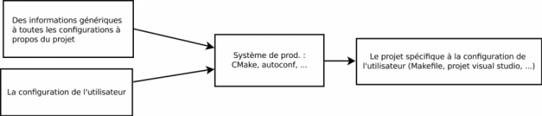

Dans le développement ou redistribution d'un programme, qu'il soit libre ou propriétaire, il sera sûrement amené à être modifié par plusieurs personnes, tournant sous différents systèmes et EDI. Néanmoins, un programme un tant soit peu complet sera souvent amené à utiliser quelques librairies supplémentaires, et il est souvent embêtant de devoir configurer les différentes dépendances du projet, sous les différents systèmes et programmes, vérifier si tout est présent, etc. C'est là qu'intervient le concept que je vais vous expliquer.
Ce système ne compilera pas directement le programme mais il va créer un projet capable de le faire (par exemple, un projet Code::Blocks, un Makefile, un projet Visual Studio, etc.) à partir d'un même fichier. Il en existe plusieurs, le plus connu étant autoconf (vous savez, ./configure !), qui lui ne gère que les Makefiles. L'avantage de l'outil que je vais vous présenter dans ce tutoriel est qu'il est portable (il générera donc tout type de projet sous tous les systèmes).
Pour illustrer le fonctionnement, voici un simple schéma :

Le premier rectangle en haut, sous CMake, va représenter un fichier à la syntaxe simple, nommé CMakeLists.txt (il est commun à tous les utilisateurs), celui d'en dessous à un fichier généré par CMake, nommé CMakeCache.txt (et lui est propre à chacun, il donne des informations sur la configuration).
C'est parti, installation !
L'installation de cet outil magique est simple.
Si vous utilisez GNU/Linux, il se trouve à coup sûr dans les dépôts de votre distribution.
Si ce n'est pas le cas ou que vous utilisez Windows ou Mac OS, il vous suffit de télécharger l'exécutable de la dernière version sur cette page. Petite note, sous Windows, il faut utiliser la console et remplacer la commande cmake par C:\Program Files\CMake x.x\bin\cmake.exe où x.x est la version de CMake.
À noter que par « simple » j'entends programme n'incluant aucune librairie supplémentaire.
La syntaxe du fichier
La syntaxe est très claire et est exclusivement constituée d'appels de commandes. Les arguments des commandes sont placés entre parenthèses et séparés par des espaces ou des sauts de ligne (la parenthèse ouvrante ne peut être séparée par des retours à la ligne du nom de la fonction). Si vous voulez un argument avec des espaces, il suffit de les entourer de guillemets. Et bien sûr, on a les inévitables commentaires qui sont marqués par un # en début de ligne. Enfin, il reste les variables que l'on utilisera pour une liste dynamique des fichiers ou pour lier des librairies ; elles se présentent sous la forme ${nom} et sont modifiées grâce à la fonction set.
nom_de_la_commande(argument1 argument2 argument3)
set(une_variable "une valeur")
nom_d_une_autre_commande(
"argument1 et la suite"
argument2
${une_variable}
)
# un commentaire
Premier exemple
Imaginons une simple architecture pour un projet quelconque :
src/
main.c
fonctions.h
fonctions.c
bin/
CMakeLists.txt
Pour les fichiers, je vais vous fournir un code, que vous puissiez tester la compilation :
#ifndef FONCTIONS
#define FONCTIONS
int addition(int, int);
#endif
#include "fonctions.h"
int addition(int a, int b)
{
return a + b;
}
Passons maintenant à notre fichier et voyons quel genre de monstre il est :
# Nom du projet
project(Addition)
# Déclaration de l'exécutable
add_executable(
bin/addition
src/main.c
src/fonctions.h
src/fonctions.c
)
Mon dieu, c'est si compliqué ! :-°
Expliquons rapidement les deux commandes utilisées :
project : ce sera le nom du projet dans les fichiers générés ;
add_executable : on déclare l'exécutable, le premier argument sera le chemin de l'exécutable après compilation, la suite sera la liste des fichiers à compiler.
Maintenant, il nous faut exploiter ce fichier !
cmake : générer un projet
Notre fichier CMakeLists.txt est prêt, lançons sans plus attendre CMake ! Pour générer un projet, rendez-vous à la racine de votre projet et lancez la commande de cette forme :
cmake . -G "générateur"
Le premier paramètre désigne le répertoire où se trouve le CMakeLists.txt, chez moi c'est la racine. Quant à l'option -G, elle définit le générateur que l'on va utiliser. Par générateur, je désigne ce qui va être utilisé comme type de sortie (Makefile, projet d'EDI, etc.). Pour obtenir la liste des générateurs que vous pouvez utiliser avec votre système, il vous suffit d'entrer la commande cmake --help.
Par exemple, si je veux générer un Makefile pour un dérivé d'Unix, je vais entrer la commande :
cmake . -G "Unix Makefiles"
Après, CMake va se débrouiller pour savoir que c'est du C et me générer mon fameux Makefile. Si nous lançons la compilation, nous obtiendrons bien notre programme :
$ make
[ 50%] Building C object CMakeFiles/bin/add.dir/src/main.c.o
[100%] Building C object CMakeFiles/bin/add.dir/src/fonctions.c.o
Linking C executable bin/addition
[100%] Built target bin/addition
$ ls bin/
addition
$ ./bin/addition
12 + 31 = 43
À noter que vous devez relancer CMake à la modification du CMakeLists.txt, pas à chaque changement du code.
Utilisation propre : un dossier build/
Comme vous l'avez remarqué, CMake génère quand même un nombre important de fichiers. Pour pouvoir les concentrer et pouvoir les supprimer rapidement, on va exécuter CMake dans un répertoire build (que l'on va créer, bien sûr) en laissant juste le CMakeLists.txt à la racine. Pour l'exécutable, on ne va donc plus préciser de répertoire et donner directement le nom. Le fichier CMakeLists.txt lui ne change pas et l'exécution se déroule plutôt comme ceci :
On notera que, comme nous sommes dans un sous-répertoire du projet et que notre fichier est à la racine, on utilise les deux points (« répertoire père »).
Ainsi, pour supprimer proprement l'exécutable et les fichiers temporaires, on fera bêtement un rm -rf build/.
Liste automatique des fichiers
Au fur et à mesure que votre projet grandit, l'arborescence du code fait de même. Ainsi, il devient gênant de devoir ajouter les nouveaux fichiers manuellement à chaque fois. Pour régler ce problème, CMake a tout prévu ! En effet, avec la fonction file(), on peut récupérer simplement la liste complète des fichiers qui répondent à un masque. Cette fonction prend donc trois arguments :
le premier est le type d'opération que l'on va faire : dans notre cas, nous allons mettre GLOB_RECURSE pour récupérer les fichiers de façon récursive ;
le deuxième argument prend le nom de la variable où l'on va placer la liste ;
le troisième argument est l'expression à laquelle le chemin de chaque fichier doit correspondre.
Voici ce que cela donnerait dans notre CMakeLists.txt :
cmake_minimum_required(VERSION 2.6) # Pour éviter un warning au lancement de CMake, on doit préciser la version minimale
# Nom du projet
project(Addition)
file(
GLOB_RECURSE
source_files
src/*
)
# Déclaration de l'exécutable
add_executable(
bin/addition
${source_files}
)
Attention : quand on ajoute ou retire un fichier, il faut relancer CMake !
Un peu plus compliqué maintenant, on va essayer (et réussir, je vous rassure !) d'ajouter une librairie à notre programme (par exemple la SDL). Il existe deux méthodes pour lier une librairie : une méthode manuelle et une méthode dite assistée. Néanmoins, comme la méthode assistée est limitée dans les librairies, je vais vous les présenter toutes les deux.
Méthode manuelle
Pour préciser le répertoire des headers de la librairie, on va utiliser la fonction include_directories() qui prend comme argument un chemin vers ce répertoire. Pour les binaires de la librairie, on utilise link_directories() qui prend aussi un chemin en argument. Et pour faire encore plus compliqué maintenant, on doit utiliser la fonction target_link_libraries() pour linker la librairie à l'exécutable. Cette fonction quant à elle prend comme premier argument le chemin vers l'exécutable, puis le nom de la librairie qu'on linke (par exemple, la SDL est linkée sous gcc avec -lSDL, on va passer SDL comme argument). Mais attention, vu que ces données sont spécifiques à l'utilisateur, on va passer par un autre fichier pour les préciser : CMakeCache.txt. Dans notre CMakeLists.txt, cependant, nous allons passer des variables.
Voici un exemple de CMakeLists.txt pour charger une bibliothèque.
Vous n'avez plus qu'à compiler votre programme avec la commande make et démarrer le binaire dans bin/ pour constater que la librairie a bien été linkée !
Méthode « assistée »
Certaines librairies courantes possèdent un module d'inclusion automatisée grâce à la fonction Find_Package(). Pour en avoir la liste, vous pouvez regarder dans le répertoire /usr/share/cmake-x.x/Modules/ ou C:\Program Files\Cmake x.x\share\cmake-x.x\Modules\, que j'abrégerai ${MODULE_DIR} dans la suite.
La fonction Find_Package() prend donc en premier paramètre le nom de la librairie, il s'agit du même nom que dans ${MODULE_DIR}/Find[NOM].cmake. Pour la SDL, c'est donc tout bêtement SDL ! :-° Après, pour le deuxième argument, on précise si l'inclusion doit être muette ou non (QUIET). Quant au troisième argument, on précise si la librairie est requise ou non (REQUIRED).
En général, ça donnera quelque chose comme :
Find_Package(SDL REQUIRED)
Maintenant, que fait cette fonction ? Elle va exécuter un script, et ce qui nous intéresse, c'est que ce même script va créer des variables contenant les différents chemins vers la librairie. Vous aurez la liste en haut du fichier du module, par exemple pour la SDL :
$ head /usr/share/cmake-2.6/Modules/FindSDL.cmake
# Locate SDL library
# This module defines
# SDL_LIBRARY, the name of the library to link against
# SDL_FOUND, if false, do not try to link to SDL
# SDL_INCLUDE_DIR, where to find SDL.h
#
# This module responds to the the flag:
# SDL_BUILDING_LIBRARY
# If this is defined, then no SDL_main will be linked in because
# only applications need main().
Voici donc ce qui changerait dans notre CMakeLists.txt précédent :
Néanmoins, pour l'instant, il y a un manque de sécurité : si la librairie n'est pas trouvée, on devrait stopper l'exécution de CMake avant qu'il génère le projet. Pour cela, on va utiliser une structure conditionnelle pour vérifier si la variable SDL_FOUND vaut false (voir le haut du fichier plus haut, c'est expliqué) : si c'est le cas, on arrête l'exécution.
Find_Package(SDL REQUIRED)
if ( NOT SDL_FOUND )
message(FATAL_ERROR "SDL not found !")
endif ( NOT SDL_FOUND )
# ...
Je ne vois pas comment je pourrais parler de CMake sans vous expliquer comment compiler une librairie, étant donné qu'il est utilisé pour nombre d'entre elles (par exemple OpenCV, librairie de traitement d'images) !
Reprenons un projet simple de librairie mathématique comportant une fonction d'addition :
Le répertoire lib/ va accueillir la librairie compilée.
Au niveau du CMakeFiles.txt, rien de compliqué, il n'y a que la déclaration de l'exécutable qui va changer en déclaration d'une librairie. Ainsi, on va utiliser la fonction add_library() à la place de la fonction add_executable(). Il n'y a qu'une petite différence au niveau des paramètres : avant de prendre la liste des fichiers, on prend aussi le type de librairie (SHARED si on la lie dynamiquement et STATIC si on la lie statiquement).
Le nom de la librairie est celui de libNOM.so. Pour préciser le répertoire où l'on va mettre le résultat, on va par contre modifier la variable LIBRARY_OUTPUT_PATH.
Vous connaissez maintenant la base des bases pour utiliser CMake, mais cet outil est vraiment très complet, et vous n'avez pas encore idée de la puissance du côté obscur de la force ! Renseignez-vous sur les différentes variables que vous pouvez modifier, comme CMAKE_CXX_FLAGS qui représente les flags de compilation, ou encore sur les différentes fonctions disponibles. Le meilleur moyen pour cela est de vous rendre sur le site officiel de CMake et de le parcourir, en particulier le wiki qui contient divers articles intéressants.